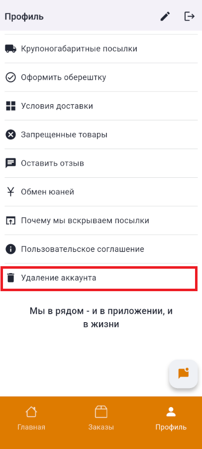
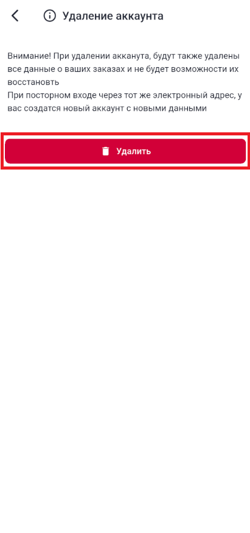
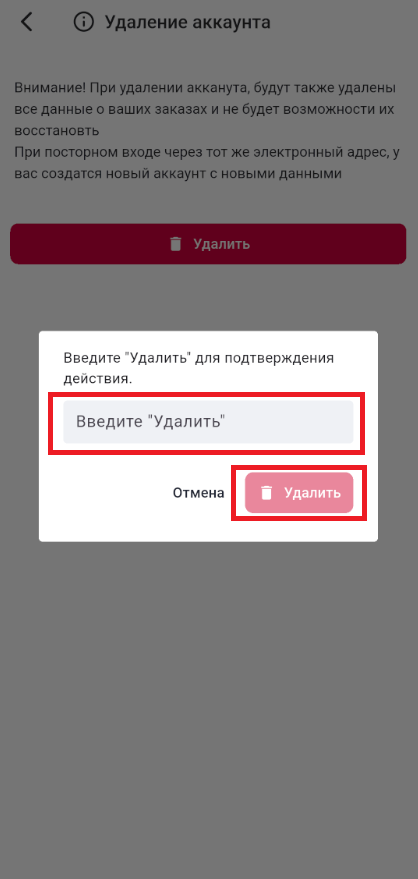

Как удалить ваш аккаунт
Приложение "Tailan Cargo".
Если вы хотите удалить свой аккаунт, включая все данные, пожалуйста, следуйте этим простым шагам:
Прежде чем удалять аккаунт, помните, что мы НЕ храним какие-либо важные данные о вас, и тем более НЕ
распростораняем их!. Также контактироваться вы сможете через наши социальные сети, если формат почты вам не
удобен. Ссылка на наши соц сети в приложении в "Главной" странице
Способ 1
- Зайдите в приложение
- Перейдите в страницу "Профиль"
- Войдите в раздел "Удаление аккаунта"
- В открывшийся странице нажмите "Удалить"
- В появившемся окне введите слово "Удалить" без ошибок и учетом регистра.
- Если вы выполнили предыдущий шаг корректно, но кнопка "Удалить" станет активным и после его нажатия у
вас удалится все ваши данные, а вы будете перенаправлены в страниук авторизации



Способ 2
- Напишите нам на наши социальные сети:
- Whatsapp: https://wa.me/996559569965.
- Telegram: https://t.me/+xJuR6JmglIdjMzAy.
- Email: svetlanamukha98@icloud.com.
- В письме укажите, что вы хотите удалить свой аккаунт, и приложите необходимую информацию для
подтверждения - способ авторизации и ваш ФИО.
- После подтверждения вашего запроса мы обработаем его и удалим аккаунт в течение 2-3 рабочих дней.
Будет удалена информация о пользователе, как ФИО, информация о заказах и доставках
Удаленные данные никак не будет возможно восстановить
Инструкция по удалению аккаунта вы также можете прочитать в мобильном приложении "Tailan Cargo" в общем меню
в странице "Профиль" в разделе "Правила использования"
Если у вас возникнут дополнительные вопросы, не стесняйтесь обращаться по тому же адресу электронной почты.